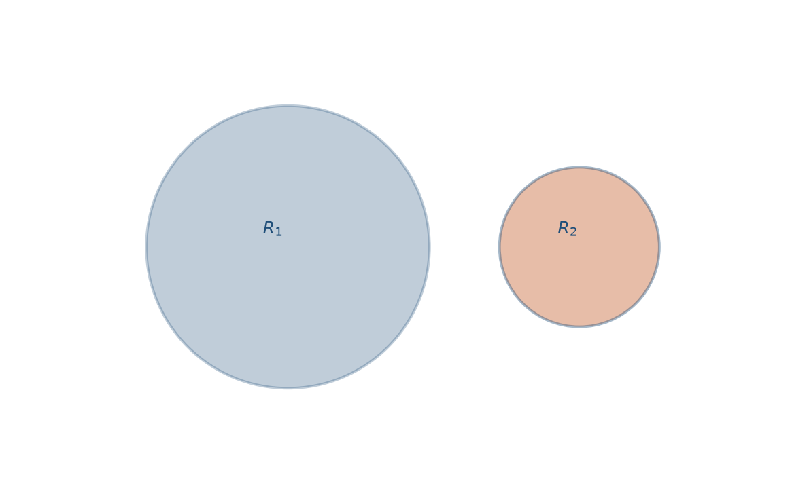
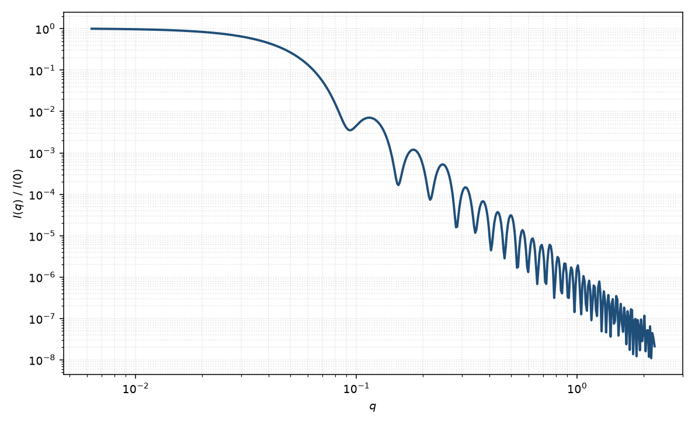

二元硬球
binary hard sphere
适用场景
二元硬球描述两种半径 $R_1,R_2$ 的硬球混合物。本页的形式因子部分给出两种颗粒的 $P_i(q)$ 与交叉振幅；浓度升高后，Ashcroft–Langreth 偏结构因子 $S_{ij}(q)$（或 Vrij 对硬球混合物的处理）进入强度。适用于双峰胶体、大小胶乳混合物、以及“单一 Schulz 球无法同时拟合两个振荡周期”的样品。
若两种粒子只是稀溶液混合物、无相互作用，强度是两条 $P(q)$ 的加权和。一旦体积分数不可忽略，交叉项 $S_{12}$ 会在低 $q$ 产生非平凡干涉，必须与一元硬球结构因子区分。
物理图像
部分相干散射写成 $\sum_{i,j}\sqrt{n_i n_j}F_i(q)F_j(q)S_{ij}(q)$。$F_i$ 为第 $i$ 种球的散射振幅（含体积与衬度）。Ashcroft 与 Langreth 给出 Percus–Yevick 闭包下二元硬球的 $S_{ij}$；Vrij 讨论了有限 $q$ 的光/X 射线散射表达。本页示意图以两种 $P(q)$ 加权及交叉振幅为主，结构因子细节见结构因子分类中的硬球页。
示意图


核心公式
出发点
两种硬球的混合物，总振幅是所有粒子贡献之和 $F_{\mathrm{tot}}=\sum_{\alpha}F_{\alpha}(\mathbf{q})\,\mathrm{e}^{i\mathbf{q}\cdot\mathbf{R}_{\alpha}}$。强度对构型平均后，既含单粒子形式因子，也含两体相关。各向同性体系写成
$$I(q)\propto \sum_{i=1}^{2}\sum_{j=1}^{2}\sqrt{n_i n_j}\,F_i(q)F_j(q)\,S_{ij}(q).$$$n_i$ 为第 $i$ 种数密度。单粒子振幅仍来自均匀球积分：$F_i(q)=V_i\Delta\rho_i\Phi(qR_i)$，$V_i=4\pi R_i^3/3$，$\Phi(x)=3(\sin x-x\cos x)/x^3$。
推导
把 $\langle|F_{\mathrm{tot}}|^2\rangle$ 拆成对角项与交叉项。对角给出 $\sum_i n_i F_i^2$；交叉项含总相关函数 $h_{ij}(r)=g_{ij}(r)-1$ 的傅里叶变换 $\tilde h_{ij}(q)$。Ashcroft–Langreth 结构因子定义为 $S_{ij}(q)=\delta_{ij}+\sqrt{n_i n_j}\,\tilde h_{ij}(q)$，于是交叉项并入上式的 $S_{ij}$。
无限稀释 $g_{ij}\to 1$（除自相关），故 $S_{ij}=\delta_{ij}$，
$$I(q)\propto n_1 F_1^2+n_2 F_2^2.$$有限浓度下，硬球直径 $\sigma_i=2R_i$ 与偏体积分数 $\phi_i=n_i V_i$ 进入 Percus–Yevick 闭包，二元直接相关函数 $c_{ij}(r)$ 在接触距离内有闭式；再经 Ornstein–Zernike 得到 $S_{11},S_{22},S_{12}$。$F_i$ 本身不随浓度改写，浓度只通过 $S_{ij}$ 进入。
低 $q$ 与渐近
低 $q$ 由渗透压缩率控制：$S_{ij}(0)$ 一般小于 1，排斥使 $I(0)$ 相对稀释极限被压低。每种球仍有自己的 Guinier：$F_i^2\simeq(\Delta\rho_i V_i)^2(1-q^2 R_i^2/5)$，但交叉项与 $S_{ij}(0)$ 混在一起，不能把混合物的表观 $R_g$ 直接当成某一种半径。
高 $q$ 时 $S_{ij}\to\delta_{ij}$，强度回到两种球形式因子之和。各自 $\Phi(qR_i)=0$ 在 $\tan(qR_i)=qR_i$（第一根 $\approx 4.49/R_i$）；两项叠加后极小通常达不到零。大 $q$ 包络仍是两套尖锐界面的 Porod $q^{-4}$。
参数表
| 参数 | 符号 | 含义 | 单位 | 典型范围 |
|---|---|---|---|---|
| 半径 1 / 2 | $R_1,R_2$ | 两种硬球半径 | Å 或 nm | 10–1000 Å |
| 数密度 | $n_1,n_2$ | 两种粒子的数密度 | cm$^{-3}$ | 由浓度与体积换算 |
| 衬度 | $\Delta\rho_1,\Delta\rho_2$ | 相对溶剂的 SLD 差 | Å$^{-2}$ | 组成决定 |
| 体积分数 | $\phi_1,\phi_2$ | 进入 $S_{ij}$ 的偏体积分数 | 无量纲 | 稀溶液 $\ll 0.1$ |
拟合注意
两套半径、两套衬度与三套 $S_{ij}$ 参数极易过拟合。先在极稀极限确定两种 $P(q)$，再把浓度系列的低 $q$ 变化交给 $S_{ij}$。不要把双峰尺寸分布（同一化学物种）与真二元混合物（两种物种）混为一谈。
取向无关。磁性若只一种粒子带磁矩，磁通道可把该组分的 $F_{\mathrm{mag}}$ 单独提出，从而解开核通道里的交叉项。
相近模型
- 硬球结构因子 — 一元 Percus–Yevick $S(q)$，二元是它的混合物推广。
参考文献
- Ashcroft, N. W.; Langreth, D. C. Structure of binary liquid mixtures. I. Phys. Rev. 1967, 156, 685–692. DOI: 10.1103/PhysRev.156.685
- Vrij, A. Mixtures of hard spheres in the Percus–Yevick approximation. Light scattering at finite angles. J. Chem. Phys. 1978, 69, 1742–1747. DOI: 10.1063/1.436750